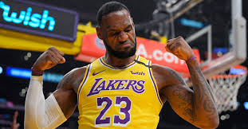

Po pierwszym sezonie otrzymał nagrodę dla najlepszego debiutanta, a w następnych sezonach tytuły MVP meczu
gwiazd (dwukrotnie: 2006, 2008) oraz najważniejszą nagrodę indywidualną – NBA MVP w 2009, 2010, 2012 oraz w
2013. W 2006 oraz od 2008 do 2017 wybierany do pierwszej piątki ligi. W 2008 został królem strzelców NBA.
Corocznie od 2005 wybierany do spotkań gwiazd NBA. Doprowadził Cleveland Cavaliers do play-offów w latach
2006-2010. W 2007 prowadzona przez niego drużyna awansowała do finałów konferencji pierwszy raz od 1992, a
następnie do finału ligi – pierwszy raz w historii klubu
